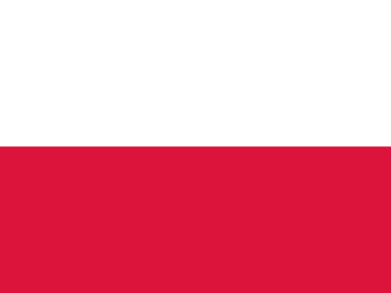

Poland7 goalsA final
turned around.
West Germany hosted and won the 1974 World Cup, the first played for the new FIFA World Cup Trophy. The Netherlands captivated audiences with Total Football, but Franz Beckenbauer's hosts recovered from an early setback to beat Johan Cruyff's side in the final.
The home campaign carried extra tension after East Germany beat West Germany in a politically charged group match. Dutch players kept changing positions and pressing opponents, creating a vivid contrast with the hosts' more controlled approach as the teams moved toward a possible meeting.
West Germany won all three matches in the second group phase. The Netherlands beat Argentina 4–0 and Brazil 2–0, while Poland also impressed: Grzegorz Lato scored seven goals and his side eventually finished third.
The Dutch reached the Munich final after those commanding second-round wins. They won a penalty before a West German player had touched the ball, and Johan Neeskens converted. Paul Breitner answered from the spot before Gerd Müller turned the match in the hosts' favour.
West Germany held on for a 2–1 win and its second world title. Cruyff's Netherlands left without the trophy, but its fluid style became one of the tournament's most influential legacies.